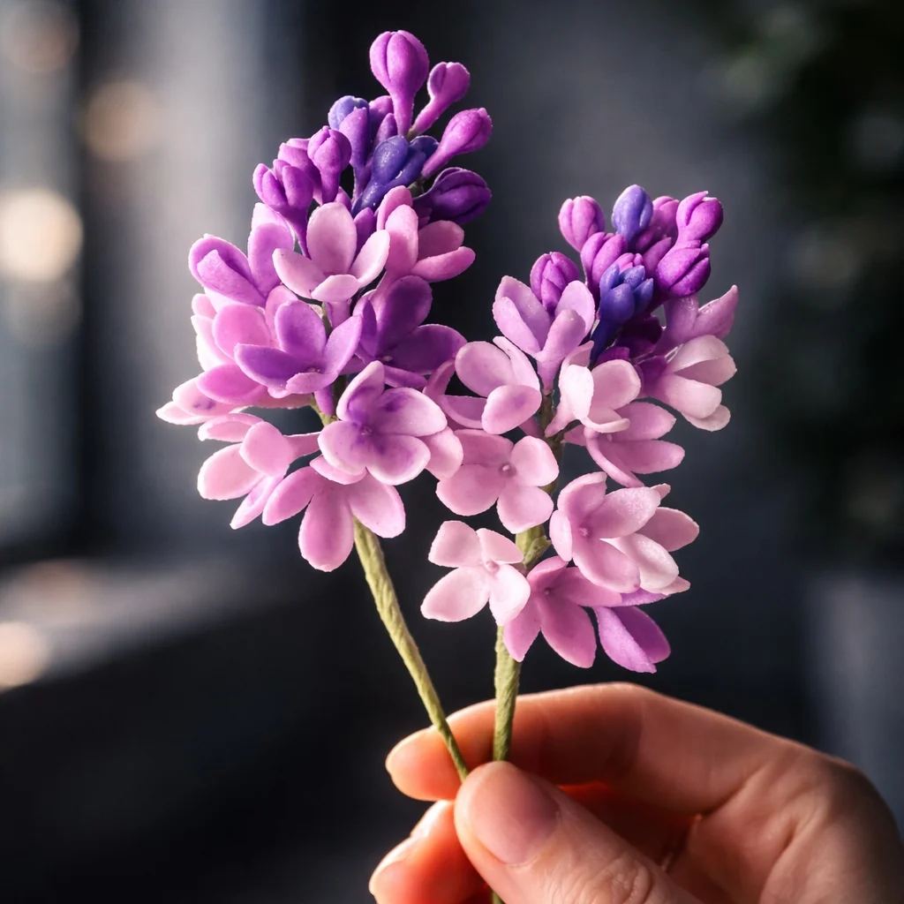

Sugarflower
Lesson
既製品では少し物足りない。
でも、手作りでも重くしたくない。
大切な日に、
気持ちも美しさも
妥協しない花の贈り物
一輪のライラックから始める、
スターターキット付きの
オンライン体験講座。
初めての方でもご参加いただけます。
申込締切：5月16日（土）まで


※体験講座受講後に本講座へ
進まれる場合は、今回の受講料を
本講座受講料から割引いたします。
「開催日程」
5月22日（金）10:00〜13:00 ／ 5月23日（土）10:00〜13:00
ライラック制作／各回3時間
この講座は、
こんな方のための入口です
既製品も素敵です。
でも、
誕生日や記念日、
そして結婚式のような
特別な日には、
もう少し自分の気持ちが
乗ったものを
選びたくなることが
ありますよね。
手作りなら何でもいい
わけでもありません。
気持ちは込めたい。
でも、
相手に負担なく
受け取ってほしい。
ちゃんと想いが伝わる
形にしたい。
この講座は、
そんな繊細な感覚を持つ
方のために作りました。
まずは一輪から。
でも、そこで終わる講座では
ありません
この体験講座で作るのは、
ブーケの中の一輪を担う
「ライラック」です。
小さな花が集まり、
やわらかな表情を作るライラックは、
繊細さと上品さを
感じられるお花です。
初めての方が、
シュガーフラワーならではの薄さや
花びらの表情を学ぶ入口としても
向いています。


今回は、ライラック一房と、
より美しく仕上げるための葉まで
作っていきます。
ただし、
この講座は
一輪を作って終わるためのものではありません。
その先にある
「束ねること」
「整えること」
「贈れる形に仕上げること」
へ進むための、きちんとした入口です。
初めての方でも
始めやすいように、
入口から整えています
シュガーフラワーは、
美しい反面、
難しそうに見える技術です。
だからこそ、
この体験講座では
初めての方でも進めやすい形を大切にしています。
- スターターキット付きです。
- 初心者向けオリジナルペーストを使用します。
- ワイヤーや必要な準備物も含まれています。
- 録画視聴があります。
- 再開催時は無料で再受講していただけます。
- ご質問は、チャットやLINEで受け付けています。
何を揃えたらいいのかわからない。
途中で止まってしまいそう。
オンラインでついていけるか不安。
そうした最初のハードルを、
できるだけ減らした状態で
始められるようにしています。

3時間で、ここまで進みます
この体験講座では、
ライラック一房とより上品に仕上げる葉も
仕上げていきます。
イメージの確認
最初に、レッスン全体の流れと完成イメージを確認します。
基本の形づくり
その後、ペーストを整えながら基本の形を作り、花びらの表情をつけていきます。
房の成形と葉の制作
ワイヤーを通して一輪のお花に
仕上げたあと、花やつぼみを
まとめながら、ライラックらしい
房の形まで整えていきます。
そして、お花を際立たせる
葉っぱの成型
仕上げ
最後は、全体を確認しながら仕上げのフィードバックを行います。
ここは誤解してほしくない
ところです
この講座で学ぶのは、
ただ可愛いものを作るための
単発体験ではありません。
シュガークラフトの技術を
土台にした、
繊細で本格的な花の技術です。
しかも、
目指しているのは一輪の完成では
ありません。
その先で、ブーケとして組み、
流れを整え、
そのまま贈れる形まで
仕上げることです。
趣味で少し触れて
終わるのではなく、
きちんと技術として学びたい方に
向けた入口です。
※これが実際の本講座
『シュガーフラワービギナー講座』で
完成するブーケの写真です。
この体験講座の先で、
実際にこんな変化が
起きています
この体験講座は、ただ一輪を作って
終わるためのものではありません。
その先にある「シュガーフラワー
ビギナー講座」では、
束ねること。
流れを整えること。
ブーケとして仕上げることまで
学んでいきます。
実際に受講された方からは、
こんなお声をいただいています。
まずは、受講生のダイジェスト動画でご覧ください。

※シュガーフラワービギナー講座
受講生のお声です。
最初は不安だった方が、
手厚いサポートの中で楽しみに
変わっていったことや、
技術として身につく実感を感じて
いただけると思います。
シュガーフラワーが、
特別な日と相性がいい理由
シュガーフラワーは、
英国のウェディング文化の中で
育まれてきた、
祝福を美しく形にする技術です。
だからこそ、ただ可愛いだけではなく、
節目の日にふさわしい上品さがあります。
結婚式。
ウェディングケーキまわりの装飾。
ウェルカムボード。
大切な人へのお祝い。
そうした場面で、
気持ちを込めながらも、
押しつけがましくならずに、
美しく想いを届けることができます。
娘さんの結婚式を、
自分の手で祝いたい。
そんな願いとも、
とても相性のいい技術です。
まずは一輪から、
体験講座でその入口に
触れてみてください。
指導は、実績と経験のある
講師が行います
この講座を担当するのは、
エコールシュクレ主宰の
平川かなえ先生です。
日本シュガーアートドール協会
シュガーフラワー専任講師。
目白大学短期大学製菓学科
シュガークラフト講師。
つくば栄養医療調理製菓専門学校
シュガークラフト講師として、
長く指導に携わってこられました。
英国での学びも重ね、国内外の
コンペティションでも高い評価を
受けています。
2024年には、
ジャパンケーキショー
シュガークラフト部門
グランプリ、連合会会長賞を
受賞されています。
高い技術を持つだけではなく、
初めての方が迷わず進めるように、
順番と流れを整えて指導して
くださる先生です。
ご受講について
シュガーフラワービギナー体験講座
「ライラック制作＋スターターキット付き」
受講料
税込 7,980円
開催日程
5月22日（金）10:00〜13:00
5月23日（土）10:00〜13:00
※内容は両日とも同じです。
※ライラック制作／各回3時間です。
申込締切：5月16日（土）まで
各回8名までの少人数開催です。
丁寧なサポートを大切にしているため、
定員を絞ってご案内しています。
この講座には、ライラック制作レッスンに
加えて、スターターキットが含まれています。
今回お届けするスターターキットは、
その後の「シュガーフラワー
ビギナー講座」でも
そのままお使いいただけます。
さらに、体験講座ご受講後に
本講座へ進まれる場合は、
今回の受講料を
本講座の受講料から
割引いたします。
つまり、今回の体験は
その場限りのお試しではなく、
本格的に学ぶための入口です。
▼ スターターキットのご紹介（動画）
お届けするキット内容
お申し込み後の流れ
お申し込み・LINE登録
お申し込み、ご決済後にLINEへご登録いただきます。
キットの発送
LINE上で発送先をご入力いただき、スターターキットをお送りします。
オンライン受講
その後、受講URLをご案内し、当日オンラインでご受講いただきます。
スマホだけでもご受講は可能です。
ただ、できればパソコンとスマホの
両方があると、手元を見せたり、
お顔を見て話したりしやすくなります。
サポートについて
- 録画視聴があります。視聴期限はありません。
- あとから何度でも見返していただけます。
- この体験レッスンを再開催する場合は、
無料で何回でも再受講していただけます。 - 個別補講はありませんが、ご質問は
チャットやLINEで受け付けています。
わからないまま終わりにくいように、
受講後のフォローも整えています。
よくある質問
この体験講座は、初めての方にもご参加いただけるように設計しています。必要な道具はスターターキットとしてお届けしますので、何を揃えればよいかわからないまま止まってしまう心配もありません。
うまくいかない理由の多くは、器用さよりも「完成までの順番」がわからないことにあります。
この体験講座では、流れに沿って迷わず進めていけるように設計しています。ご質問は、チャットやLINEで受け付けています。
まずは、シュガーフラワーの世界に触れていただけたらと思っています。その上で、もっと先へ進みたいと感じられた方にだけ、本講座をご案内しています。
まだ申込までは迷う方へ
ここまでお読みいただき、
ありがとうございます。
体験講座が気になっているけれど、
もう少し作品例を見てから
決めたい方。
日程や準備を確認しながら、
あらためて検討したい方。
そんな方へ向けて、
LINEでもご案内をお届けしています。
募集開始のお知らせや、
作品の雰囲気がわかる情報。
ご質問の受付をご希望の方は、
こちらからご登録ください。
※体験講座に申し込むかどうかは、
LINE登録後にゆっくりご検討いただけます。
最後に
きれいに整った既製品も素敵です。
でも、
大切な日には、
もう少し自分の気持ちが乗ったものを
選びたくなることがあります。
結婚式のような人生の節目にも。
大切な人へのお祝いにも。
そんなときに、重たくならずに、
でもちゃんと想いが伝わる形を、
自分の手で作れたら素敵ですよね。
その最初の一歩が、この体験講座です。
まずは、ライラック制作から
シュガーフラワーの入口を
体験してみてください。